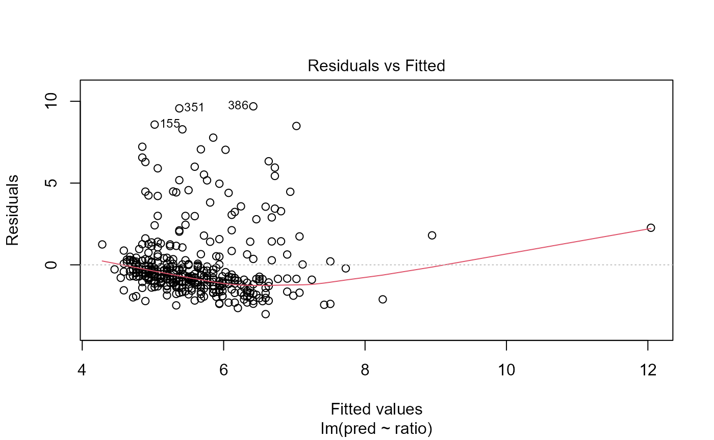

BIS 620 Final (Using bis620.23 package)
bis620-final.Rmd
library(bis620.2023)Background and Motivation
The dataset was provided by Dr. John Schorling from the University of Virginia School of Medicine. It features several attributes of 403 subjects and revolves around understanding the prevalence of obesity, diabetes, and other cardiovascular risk factors; more specifically, it focuses on African Americans that were sampled from central Virginia. The reason for the race distinction is because coronary heart disease (CHD) remains the most common cause of death among African Americans, and the difference in CHD mortality rates between African Americans and other races is only growing.
Our analysis will take a slight turn and focus primarily on features related to type II diabetes. This is an incredibly important topic as diabetes are incurable and impacts the lives of millions of people worldwide. Being able to pinpoint or even just analyze variables that relate to diabetes will be extremely beneficial for developing preventative measures towards diabetes. Fortunately, the dataset provides enough biomedical data for this to be possible. The analysis will primarily revolve around 3 predictor variables: living location, body frame, and cholesterol to high-density lipoprotein (HDL) ratio. The choice of cholesterol to HDL ratio come from a research paper that suggested lower levels of lipoprotein have been associated with greater prevalence of type 2 diabetes. I hypothesize that the mean of the response variable, glyhb, will be significantly different among the body frame variables AND the location variables due to differences in diet and culture in different areas. Moreover, I hypothesize that cholesterol to HDL ratio will be predictive of glyhb scores since there is research that suggests that this is the case (it would be nice to provide some statistical confirmation on this research. especially since I do not understand most of the science/biology behind it).
glycosolated hemoglobin (glyhb): Glyhb levels above 7 are considered to be a positive type II diabetes diagnosis.
The Research Question
Given the above information, my research question is this:
How does body size and living area affect one’s glycosolated hemoglobin (glyhb) levels, and are cholesterol to HDL ratios significantly predictive of glyhb levels? (note that a glyhb score > 7 is taken as a positive diagnosis of type II diabetes).
Note: The data only contains African American patients from Louisa and Burmingham, so I will avoid making sweeping generalizations in my results. Moreover, we will assume that Dr. John Schorling’s data was properly (randomly) sampled.
Data Cleaning and Exploration
Cleaning
The first step I will do before beginning my analysis is cleaning the data. Fortunately, the dataset was recorded quite well, and the only thing we need to do is take out columns that are NA or missing. Then, we simply select our variables of interest. My clean_data() function will do all of that for me below.
data(diabetes)
diabetes <- clean_data(diabetes) # function will clean my data for meExploratory Data Analysis (EDA)
Histograms
The first part of our EDA will be to look at the histograms of glyhb and cholesterol to high-density lipoproteins. Histograms are useful in identifying the distribution of numerical variables. They are the barplot version for continuous data. A histogram was used in order to analyze the distribution of the response variable and the numerical predictor variable. It is evident that the response variable, glyhb, is right skewed; however, the Central Limit Theorem (CLT) will take care of the normality assumption (this assumption simply helps us decrease the chance of false positives in our analysis for ANOVA). The numerical predictor variable, cholesterol to HDL ratio, looks almost normally distributed. For our analysis’ purposes, the predictor does (glyhb) not need to be normally distributed, but it is useful to look at its distribution to get a feel for the data. I will run my explore_hist() function to look at the histograms of the quantitative variables, glyhb and ratio.
explore_hist(diabetes) # histograms for our quantitative variablesAs we can see, the response variable, glyhb, is right skewed. However, since we have an abundance of data, CLT will take care of this assumption in our later ANOVA test.
Moreover, the quantitative predictor, ratio, seems to be more concentrated around lower ratios.
ANOVA Assumptions
The next part of our EDA is to see if the ANOVA assumptions are met.
ANOVA stands for the Analysis of variance. It is a statistical test that determines whether the means differ between 3 or more groups. This can be thought of as a multi-sample student t-test because a student t-test only determines whether the means differ between 2. In general, the null hypothesis is that the means of each group are equal and the alternative hypothesis is that at least one pair of groups do not have equal means. Or:
\(H_0: \mu_1 = \mu_2 = ... = \mu_n\) where n = # of groups
vs.
\(H_a: \mu_i \ne \mu_j\) where \(i \ne j\) and \(i,j\) each represent a group
The ANOVA test has 3 assumptions: 1) The data are randomly sampled. 2) The residuals are normally distributed. 3) The variance within each groups are equal (checked with residuals). A fourth (looser) assumptions is that the response is approximately normally distributed, but we have already dealt with this in our Histograms section.
anova_assumptions(diabetes) # diagnostic plots for ANOVA
The responsibility of the first assumption lies on the people who collected the data. The paper does not go into detail on how the data was sampled, but the benefit of the doubt will be given to Dr. John Schorling– the collector of the data.
Fortunately, the other two assumptions were easily checked by looking at a qqplot of the residuals and a Residuals vs. Fitted values plot, respectively. The second plot does not have all the points near the line; however, due to the number of observations in the dataset, the Central Limit Theorem will take care of the normality assumption. In the same figure (first and third plot), it is obvious that the homogeneity of variances assumption is met due to the lines not following a distinct pattern.
Moreover, the last figure tells us there are a few influential points that could affect the analysis results.
Linear Regression Assumptions
Linear regression is a simple, but powerful model for prediction. The gist of it is that the model will fit a line to the data and use the line in order to make predictions. The line is not fitted arbitrarily– there is a mathematical formula that minimizes the sum of squared errors for the line at each point. For those interested, the method is called Ordinary Least Squares (OLS), and there is an OLS estimate for each intercept and predictor. In linear regression, the null hypothesis is that the slope of the regression line is equal to 0 and the alternative hypothesis is that the slope of the regression line is not equal to 0. Or:
\(H_0: \beta_i = 0\)
vs.
\(H_a: \beta_i \ne 0\)
The assumptions of linear regression are actually the same as the ANOVA test: 1) The data are randomly sampled. 2) The residuals are normally distributed. 3) The variance of the residuals are equal.
lr_assumptions(diabetes, log = FALSE) # logistic regression diagnostics
Just looking at the first plot tells us that the variance of the residuals are not equal, since there are large deviations from the horizontal 0 line. Thus, it will probably be a good idea to take a look at the log transformed response variable, glyhb.
lr_assumptions(diabetes, log = TRUE) # log transformed the responseAgain, the responsibility of the first assumption lies on the people who collected the data, so we can clear that assumption.
From the first plot, it does seem like the normality of residuals assumptions is not met, but due to the number of data points, we can let CLT take care of it. Now looking at the first and third plots, we see that there isn’t too much of a pattern each line follows (they are at least a lot better than the non log-transformed response).
The last figure tells us that there are some influential observations that could affect the analysis.
After the log transformation, a more specific hypothesis test for our analysis would be:
Null: Cholesterol to HDL ratio is not predictive of log glyhb levels (\(\beta_1=0\))
Alternative: Cholesterol to HDL ratio is predictive of log glyhb levels (\(\beta_1 \ne 0\))
Results
ANOVA
aov_results(diabetes)| term | Degrees of Freedom | Sum of Squares | Mean Squared Error | F-value | p-value |
|---|---|---|---|---|---|
| location | 1 | 2.915 | 2.915 | 0.586 | 0.44 |
| frame | 2 | 54.324 | 27.162 | 5.456 | 0.005 |
| location:frame | 2 | 20.91 | 10.455 | 2.1 | 0.12 |
| Residuals | 372 | 1852.014 | 4.979 | NA | NA |
The results of the ANOVA are displayed below.
Location has a 1 degree of freedom, an F-value of 0.586, and a p-value of 0.44. Due to the high p-value (> 0.05), I fail to reject the null hypothesis. This means that the means do not differ significantly within each location. In a biological context, this may indicate that the location of living does not have a significant effect on glyhb levels for this population due to similarities in lifestyle and diet in Buckingham and Louisa.
Frame has 2 degrees of freedom, an F-value of 5.456, and a p-value of 0.005. Due to the low p-value (<< 0.05), I reject the null hypothesis in favor of the alternative. This means that glyhb levels differ significantly among body frames. A biological explanation for this is that different body frames may lead to different amounts of production for glyhb resistant fluids, such as high-density lipoproteins.
The third row is the interaction between location and frame. However, since its p-value is greater than 0.05, it is not significant.
Linear Regression
The results of the linear regression model are displayed below.
lr_results(diabetes)| Term | Estimate | SE | T-statistic | p-value |
|---|---|---|---|---|
| (Intercept) | 1.379 | 0.043 | 32.168 | < 0.001 |
| ratio | 0.063 | 0.009 | 7.141 | < 0.001 |
Ratio has an OLS estimate of 0.063, a t-statistic of 7.141, and a p-value of \(4.839 * 10^{-12}\). The confidence interval for the coefficient lies in the range (0.0457169, 0.08046309). Due to the low p-value (<< 0.05) and the confidence interval not overlapping 0, I reject the null hypothesis in favor of the alternative. That is, cholesterol to HDL ratio is a significant predictor of log glyhb levels. A biological explanation for this is that cholesterol is positively correlated with glyhb levels, while high-density lipoprotein tend to be negatively associated with glyhb levels. Thus, it is almost expected that a higher ratio will lead to higher glyhb levels.
In statistical terms, an increase in one unit of cholesterol to HDL ratio will yield an increase in 0.063 units of log glyhb.
One thing to note is that the R^2 value for the linear regression model is only 0.1194, which means that the ratio accounts for 11.94% of the variation in log glyhb levels. One might think that, with the low R^2 value, ratio as a predictor is not great; however, the low R^2 value is expected. The linear regression model only uses one predictor variable, so cholesterol to HDL ratio being able to explain 12% of the variation in log glyhb levels by itself is quite good.
Discussion and Conclusion
The methods performed above have provided important findings and insights as to what predictors significantly affect glyhb levels and which are predictive of stress. Thus, the study has answered the question proposed in the introduction.
Based on the ANOVA test, it was found that location does not have a significant effect on one’s glyhb levels. In a statistical context, the means between each group in location do not vary significantly. On the other hand, it was discovered that one’s body frame does have a significant effect on one’s glyhb levels. In a statistical context, at least one of the means between each group in body frame vary significantly. Based on the linear regression model, it was found that cholesterol to HDL ratio is significantly predictive of glyhb levels. In a statistical context, cholesterol to HDL ratio is significantly associated with glyhb.
Before making sense of these findings, the limitations must be addressed. First, the study assumed that the participants in the study were randomly sampled. If the participants were given money incentives or volunteered on their own accord, that may introduce some bias and dependence to the study. This could definitely affect the significance of the study’s results. Additionally, the participants are African American and reside in two cities within central Virginia. It may be the case that African Americans react differently to each predictor compared to other races. This, along with the restricted location of the population, makes it hard to generalize the study’s findings to a larger population. These limitations will be taken into account when drawing conclusions on the effect of the study’s predictors on glyhb levles.
With that being said, the insignificance of location on glyhb levels could be due to similarities in diet and culture within Buckingham and Louisa, which is where the data was collected from. One would think that different locations would at least yield difference in glyhb levels due to difference in diet. It is important to note that the insignificance of location in this limited population does not mean location will be significant everywhere. For example, if the two factors in location were “California” and “New York”, it is possible that location would become significant. The significance of body frame on glyhb levels may be tied into diets. People with different body frames eat a different amount, which is probably due to the body requiring more calories for bigger frames. A naturally petite person may not be as hungry as a naturally burly person. Anyhow, the study has demonstrated that one’s body frame has a significant effect on their glyhb levels. Finally, the significance of cholesterol to HDL ratio as a predictor for glyhb levels was expected, but good to confirm statistically. Studies have shown that cholesterol is positively correlated with glyhb levels, and high-density lipoprotein (HDL) is negatively associated with glyhb levels. From the linear regression model, every one unit increase of the ratio corresponds to an increase in 0.063 units of log glyhb levels, which makes intuitive sense since a higher ratio should lead to higher glyhb levels. As mentioned before, the log transformation should have little/no effect on the conclusion since it is a monotonic transformation (strictly increasing).
The final takeaway from this study is that glyhb levels in African Americans living in central Virginia are significantly affected by one’s body frame. The effect on glyhb levels by location were found to be insignificant, but that may be due to the limited scope of the population. Additionally, the ratio of cholesterol to HDL is a significant predictor for glyhb levels.